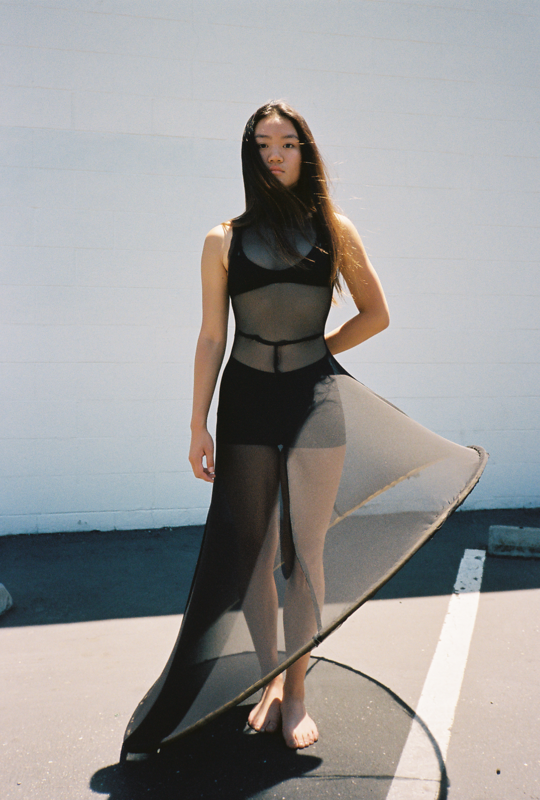
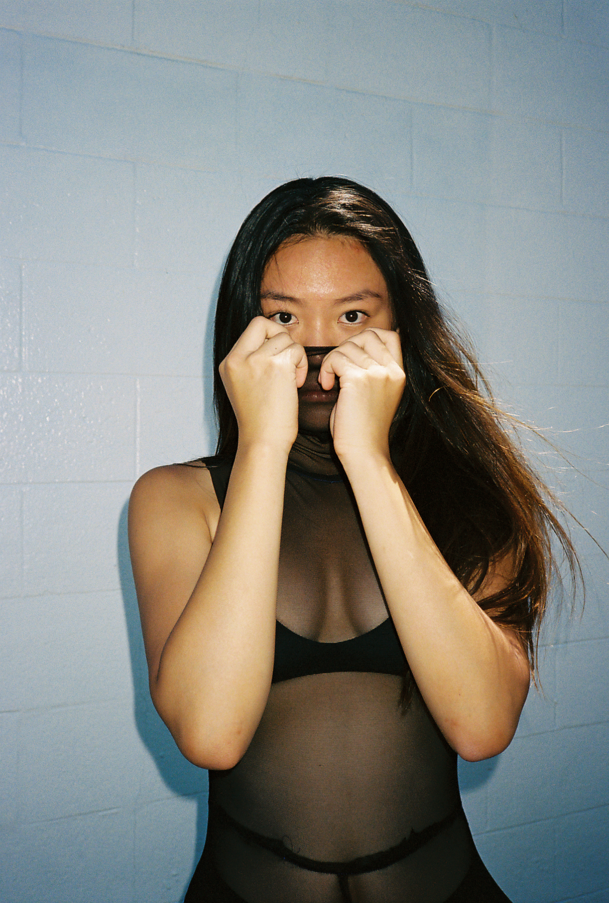
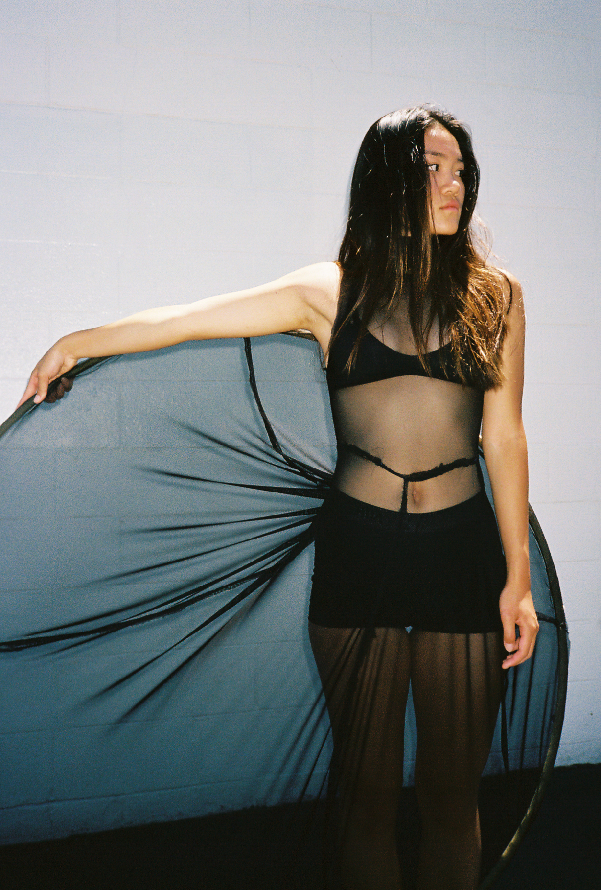
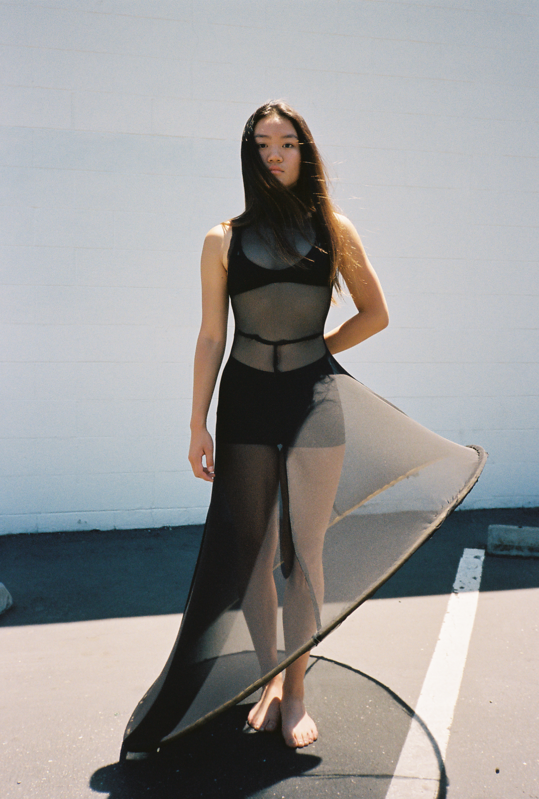
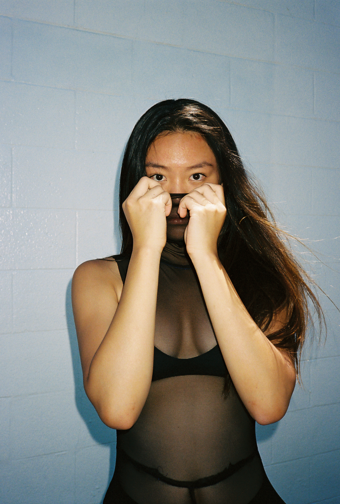
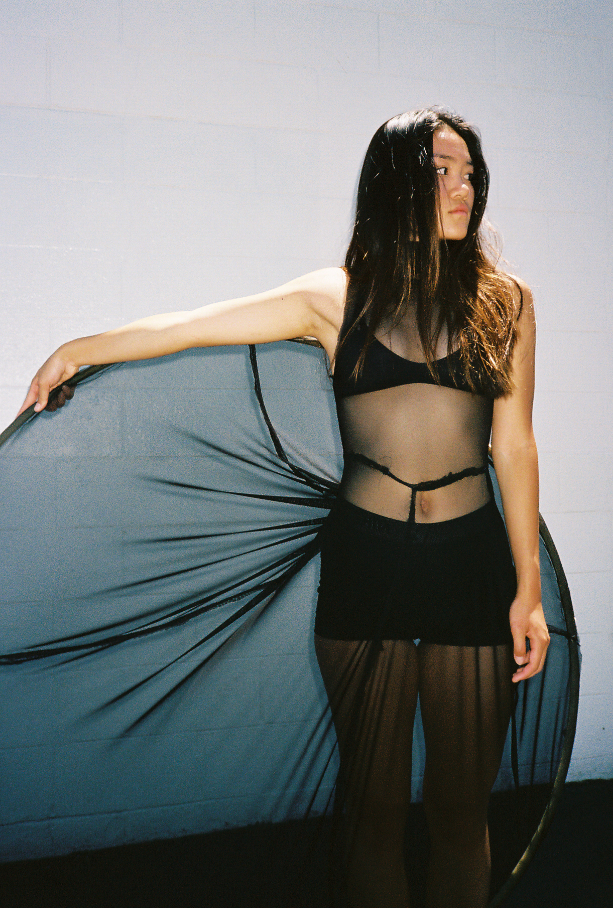

dimensions: 60x60x200date: 2018materials: sewn fabric, wood hoopI am intrigued by perfection and how much society begs for it. I designed this dress to protest symmetry and to celebrate the beauty in natural unbalance.

 




